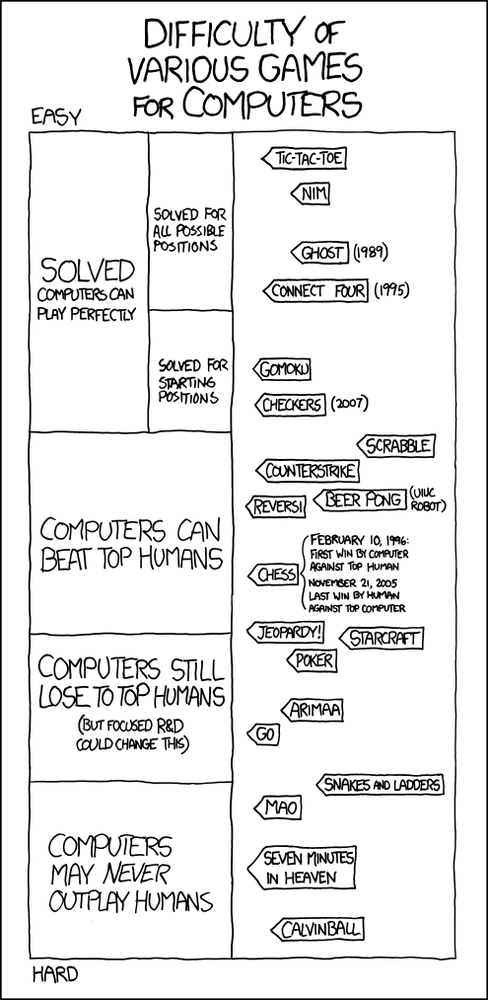

Adversarial search
Table of Contents
#+BEGIN_QUOTE "It was a watershed event, but it doesn't have to do with computers becoming intelligent," said Douglas Hofstadter, a professor of computer science at Indiana University and author of several books about human intelligence, including Gödel, Escher, Bach, which won a Pulitzer Prize in 1980, with its witty argument about the connecting threads of intellect in various fields of expression. "They're just overtaking humans in certain intellectual activities that we thought required intelligence. My God, I used to think chess required thought. Now, I realize it doesn't. It doesn't mean Kasparov isn't a deep thinker, just that you can bypass deep thinking in playing chess, the way you can fly without flapping your wings." — Bruce Weber, "Mean Chess-Playing Computer Tears at Meaning of Thought," The New York Times, Feb 19, 1996 #+END_QUOTE Chess, tic-tac-toe, connect-four, checkers, go, etc. etc. are zero-sum games, meaning in the end, the gains and losses among the players add up to zero. In the examples listed, one player wins, another loses, so the sum of "utility" for each player at the end is zero. Poker is another zero-sum game, although there is one winner and many losers. However, the amount the winner wins is equal to the sum of the amounts the losers lose. Study of zero-sum games began the study of game theory, which is a mathematical subject that covers any situation involving several agents attempting to make decisions that maximize their own utility. We will not be studying game theory, as a whole, but we will learn how to "play" zero-sum games.
Expansion of the search problem
The components of a search problem included the following:
- Initial state
- some description of the agent's starting situation
- Possible actions
- the set of actions (such as chess moves) available to the agent, also called "applicable" actions; the possible actions depend on the state
- Transition model
- some way of figuring out what an action does;
in other words, a
resultOf(state, action)function which returns a state; the transition model defines a state space, which takes the form of a directed graph (vertices are states, edges are actions)
Note that we have left out "Goal criteria" and "Path cost." In order to support adversarial search, we add the following:
- Players
- a list of players (we'll look at 2-player games) and a
switch_player(player)function that switches to the player following =player=
- Terminal tests
- a function or functions that test for final states (winning/losing/tied states)
- Utility function
- a function
utility(state, player)that returns a real number (or integer) representing the value toplayerofstate; presumably, winning states have the highest utility, losing states the lowest utility, tied states have zero utility, and states that are not terminal have a utility calculated by looking at the utilities of following states
I move, you move, etc.
The simplest zero-sum games are those that have two players who take turns. Chess, tic-tac-toe, etc. fit this definition. Suppose a human is playing a computer. The computer needs to figure out which move is best (the computer wants to maximize the utility of its move). We learned how to search (BFS, DFS, A*, and so on), but even though the computer will be engaging in a search, those search algorithms will not help us here. BFS, DFS, A* and so on attempt to maximize (or minimize) every choice equally (for example, we want to find the shortest route). But in a game search, instead we want to maximize the payoff of our choices but minimize the payoff of the other player's choices. The way to do this is to treat the opponent's positive utility as our negative utility. So if the opponent makes a winning move, that move is worth 1.0 to the opponent but worth -1.0 to us (a tie game has utility 0.0 for both players). We want to find the move that maximizes our utility (best case, 1.0) and minimizes the opponent's utility (best case, -1.0).
Minimax algorithm
The minimax algorithm does exactly that: it finds the move that minimizes the maximum utility the opponent can obtain. You can call it "maximin" if you'd like: maximize the minimum utility we (not the opponent) can obtain. They are the same algorithm, just the order of the steps (maximize or minimize) is different. First, we consider all of our possible moves. If a move is a final move (winning/losing/tie), then we calculate its utility directly (1.0 for a win, -1.0 for a loss, 0.0 for a tie). If it's not a final move, we have to look further to calculate its utility. We choose one move from which to "look further," and consider all the possible moves the opponent might make. If the opponent wins, the utility of the opponent's move is -1.0. Of all the possible moves the opponent might make, we find the worst (minimum) utility. That utility is the value of our move. Of all our possible moves, we choose the one that has the maximum utility; it is the maximum of the minimum utilities generated by the opponent's moves. We are assuming the opponent is also choosing the best move, so when we choose our move, we want to find the move that performs best (max) assuming the opponent also performs best (min; i.e., max for the opponent, min for us). Here is an example search tree for tic-tac-toe. We basically have a depth-first search but also propogate information about utilities (max or min) upwards. #+BEGIN_HTML <div style="text-align: center"> <OBJECT CLASSID="clsid:D27CDB6E-AE6D-11cf-96B8-444553540000" WIDTH="474" HEIGHT="550" CODEBASE="http://active.macromedia.com/flash5/cabs/swflash.cab#version=5,0,0,0"> <PARAM NAME="MOVIE" VALUE="./flash/ttt-minimax-example.swf"> <PARAM NAME="PLAY" VALUE="true"> <PARAM NAME="QUALITY" VALUE="best"> <PARAM NAME="LOOP" VALUE="true"> <EMBED SRC="./flash/ttt-minimax-example.swf" WIDTH="474" HEIGHT="550" PLAY="true" LOOP="true" QUALITY="best" PLUGINSPAGE="http://www.macromedia.com/shockwave/download/index.cgi?P1_Prod_Version=ShockwaveFlash"> </EMBED> </OBJECT> <br/> <a href="./images/ttt-minimax-example.png">View final image</a> </div> #+END_HTML
Python code for minimax
#+BEGIN_SRC python def minimax(state): max_trans = None max_u = None transitions = possible_transitions(state, 'x')
for trans, nextstate in transitions.iteritems():
u = min_utility(nextstate, 'o') if max_u is None or u > max_u: max_trans = trans max_u = u return max_trans def min_utility(state, player):
if is_winning(state, player) or \ is_winning(state, switch_player(player)) or \ is_tie(state): return utility(state, 'x') else: transitions = possible_transitions(state, player) min_u = None for nextstate in transitions.values():
u = max_utility(nextstate, switch_player(player)) if min_u is None or u < min_u: min_u = u return min_u def max_utility(state, player):
if is_winning(state, player) or \ is_winning(state, switch_player(player)) or \ is_tie(state): return utility(state, 'x') else: transitions = possible_transitions(state, player) max_u = None for nextstate in transitions.values():
u = min_utility(nextstate, switch_player(player)) if max_u is None or u > max_u: max_u = u return max_u #+END_SRC
Python code for tic-tac-toe components
Here is some code for tic-tac-toe specific components used by the
minimax algorithm. Not all the code needed to play tic-tac-toe is
shown here, however.
#+BEGIN_SRC python
def switch_player(player):
if player == 'x': return 'o'
else: return 'x'
def is_winning(state, player):
winning = False
for i in [0,1,2]:
if state[i]1 = state[i][1] = state[i]2 == player:
winning = True
for j in [0,1,2]:
if state1[j] = state[1][j] = state2[j] == player:
winning = True
if state1, 1 = state[1][1] = state2, 2 == player:
winning = True
if state1, 2 = state[1][1] = state2, 1 == player:
winning = True
return winning
def is_tie(state):
blanks = 0
for i in [0,1,2]:
for j in [0,1,2]:
if state[i][j] = ' ': blanks + 1
return(blanks == 0 and \
not is_winning(state, 'x') and \
not is_winning(state, 'o'))
def utility(state, player):
if is_winning(state, player): return 1
if is_winning(state, switch_player(player)): return -1
return 0
#+END_SRC
Alpha-beta pruning
The minimax search is very costly. Far too many states are
searched. We can use a very simple, and somewhat obvious, optimization
to search only a fraction as many states while coming up with the
exact same answer as minimax.
The key insight is that when we are performing the "max" step (or
equivalently, the "min" step), if we find that a certain move gives a
maximum utility X (by searching its entire subtree), we can avoid any
searches of subtrees whose minimum value is less than X.
Look here, from min_utility (similar code is found in max_utility~
and ~minimax functions as well):
#+BEGIN_SRC python
min_u = None
for nextstate in transitions.values():
u = max_utility(nextstate, switch_player(player))
if min_u is None or u < min_u:
min_u = u
return min_u
#+END_SRC
The variable min_u here will only get smaller. Recall that the
utility that min_utility returns will be used by the max_utility~
function. So different calls to ~min_utility will be compared to pick
out the maximum min_utility value. Suppose the min_utilty function
was told (via a parameter) that some other call to ~min_utility~
produced a minimum utility of α, and that so far, α is the
greatest minimum utility found so far (the maximum of the
minimums).
Then if min_u ever goes smaller than α, there is no reason to
continue searching the other transitions (game moves), because ~min_u~
can only go smaller (being a minimum), and any value smaller than
α (the previously-found maximum min_u produced by earlier
function calls) will simply be ignored when maximizing.
The same can be said about max_u in the max_utility function; we
use the β parameter to keep track of the smallest max_u so far
seen.
When maximizing (in max_utility), we will only change α because
we want to know the maximum of the minimums (α is the greatest
lower bound); when minimizing (in min_utility), we will only change
β.
- α
- the utility of the best (highest-value) choice we have found so far at any choice point along the path in the "max" mode of minimax
- β
- the utility of the best (lowest-value) choice for the "min" mode of minimax
As we search down the tree, we provide the recursive search procedure our currently-known best α and β. If the recursive search sees that some subtree cannot give any utility better than α (or worse than β) then we don't bother searching further from there. It's very important to realize that the alpha-beta pruning procedure does not produce different answers than minimax. Alpha-beta pruning simply does not bother checking subtrees when it is certain those subtrees will not change the answer produced by minimax. Check out the final search graph of another tic-tac-toe example, this time with alpha-beta pruning. For comparison, this is the search graph without alpha-beta pruning. Alpha-beta pruning performs much better than vanilla minimax:
{kind=link}
{kind=link}
| Number of x/o tokens on the board | Average minimax states checked | Average α-β states checked |
|---|---|---|
| 0 | 549946.0 | 29019.0 |
| 2 | 7293.0 | 1308.0 |
| 4 | 176.2 | 81.8 |
| 6 | 11.0 | 9.2 |
| 8 | 1.3 | 1.3 |
Python code for alpha-beta pruning
The minimax code above needs few modifications to support alpha-beta pruning: #+BEGIN_SRC python def minimax_ab(state): max_trans = None max_u = None alpha = None beta = None transitions = possible_transitions(state, 'x')
for trans, nextstate in transitions.iteritems():
u = min_utility_ab(nextstate, 'o', alpha, beta) if max_u is None or u > max_u: max_trans = trans max_u = u
if beta is not None and u >= beta: return trans
if alpha is None or u > alpha: alpha = u return max_trans def min_utility_ab(state, player, alpha, beta):
if is_winning(state, player) or \ is_winning(state, switch_player(player)) or \ is_tie(state): return utility(state, 'x') else: transitions = possible_transitions(state, player) min_u = None for nextstate in transitions.values():
u = max_utility_ab(nextstate, switch_player(player), alpha, beta) if min_u is None or u < min_u: min_u = u
if alpha is not None and u <= alpha: return u
if beta is None or u < beta: beta = u return min_u def max_utility_ab(state, player, alpha, beta):
if is_winning(state, player) or \ is_winning(state, switch_player(player)) or \ is_tie(state): return utility(state, 'x') else: transitions = possible_transitions(state, player) max_u = None for nextstate in transitions.values():
u = min_utility_ab(nextstate, switch_player(player), alpha, beta) if max_u is None or u > max_u: max_u = u
if beta is not None and u >= beta: return u
if alpha is None or u > alpha: alpha = u return max_u #+END_SRC
A poor example?
Tic-tac-toe is such a simple game that minimax and alpha-beta pruning
are not really necessary. Apparently, here is optimal play (from
xkcd):
#+BEGIN_CENTER
 #+END_CENTER
#+END_CENTER
I can't help myself
This is also instructive (from xkcd): #+BEGIN_CENTER  #+END_CENTER